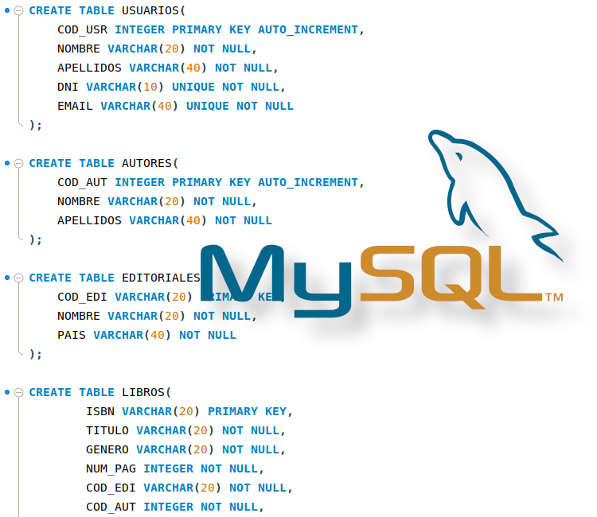
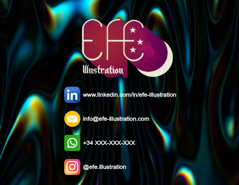

Mis proyectos

Base de Datos
Elaboración de una base de datos para biblioteca

Página web responsive
Página web para una ilustradora realizada en colaborción con otros alumnos de la UNIR
Script de automatización
Script de sh para el control de los accesos al router personal
Gestion de redes
Gestión de firewalls, accesso y mantenimiento de la red de un instituto.